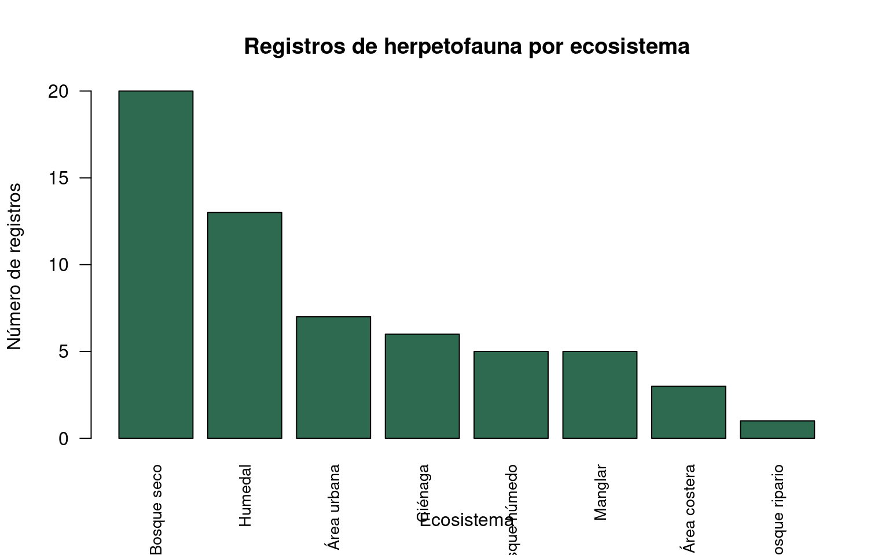
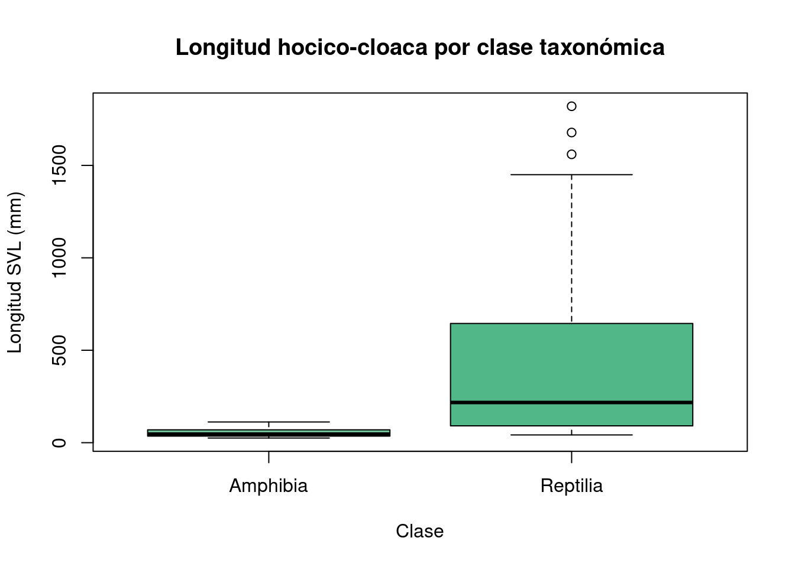

herp <- read.csv("../datos/semana-3/herpetofauna_caribe_listo.csv")Semana 3 — Git, GitHub y Quarto
Control de versiones y documentos científicos reproducibles con datos de herpetofauna
Resultado de aprendizaje
Al finalizar esta sesión, el estudiante será capaz de:
- Explicar qué es Git y GitHub y por qué son fundamentales en la ciencia de datos reproducible
- Ejecutar el flujo básico de Git: clonar → editar → commit → push desde RStudio
- Crear un documento Quarto (.qmd) con YAML configurado, texto en Markdown y chunks de R
- Insertar gráficos con pie de figura (
fig-cap) e interpretar los resultados en prosa - Renderizar un documento Quarto a HTML desde RStudio
Bloque A — Git y GitHub (≈ 20 minutos)
A.1 El problema del “informe_DEFINITIVO_v3.docx”
Todos hemos vivido algo como esto:
informe.docx
informe_v2.docx
informe_final.docx
informe_final_CORREGIDO.docx
informe_final_DEFINITIVO.docx
informe_final_DEFINITIVO_v2.docx
informe_final_DEFINITIVO_ESTE_SI.docxAhora imagina que son scripts de R con los análisis de tu tesis. ¿Cuál versión usas? ¿Cuál tenía el análisis que le mostraste a tu directora la semana pasada? ¿Qué cambió entre versiones?
Git resuelve exactamente ese problema.
Pregunta para el grupo: ¿Alguien ha perdido trabajo porque sobreescribió un archivo sin querer?
A.2 ¿Qué es Git? ¿Qué es GitHub?
Git y GitHub — la diferencia
Git es un sistema de control de versiones que:
- Registra cada cambio que haces a tus archivos
- Guarda quién hizo cada cambio, cuándo y por qué (el mensaje del commit)
- Permite regresar a cualquier versión anterior en cualquier momento
- Vive localmente en tu computador
GitHub es la “nube” para repositorios Git:
- Respaldo en línea de tu trabajo
- Permite compartir código con colaboradores o con el docente
- Es donde entregarás el taller de esta semana: el docente abre tu repositorio y revisa el código y los resultados
Analogía: Git es como el Track Changes de Word, pero para cualquier archivo de texto (R, Quarto, CSV), y mucho más poderoso.
A.3 Vocabulario mínimo
| Término | Significado |
|---|---|
| Repositorio | Carpeta de tu proyecto bajo control de Git |
| Commit | Foto instantánea de tu trabajo en un momento dado (“guardé y le puse nombre a lo que hice”) |
| Push | Subir tus commits locales a GitHub |
| Pull | Bajar cambios desde GitHub a tu computador |
| Clone | Descargar una copia completa de un repositorio de GitHub |
A.4 Flujo básico para el taller
Este es el único flujo que necesitas dominar esta semana:
1. Crear un repositorio NUEVO en github.com
2. Copiar la URL del repositorio
3. RStudio → File → New Project → Version Control → Git → pegar URL (clonar)
4. Crear tu documento .qmd, escribir el análisis
5. Pestaña "Git" en RStudio → marcar archivos → Commit con mensaje descriptivo
6. Push → los cambios suben a GitHub
7. El docente entra a tu GitHub y revisaComandos de terminal equivalentes (RStudio tiene botones para todo esto):
git clone <URL> # clonar un repo
git add archivo.qmd # marcar archivo para el commit
git commit -m "mensaje" # crear el commit con mensaje
git push # subir a GitHub
¿Aún no tienes cuenta en GitHub?
Crea tu cuenta gratuita en github.com/signup — necesitarás el correo institucional o personal. La cuenta te servirá durante toda la carrera y más allá.
A.5 Git tiene mucho más — lo veremos gradualmente
Lo que NO cubrimos hoy (y está bien)
Git tiene funciones avanzadas que iremos incorporando durante el semestre: ramas (branches), fusiones (merge), resolución de conflictos, historial, reversa de cambios, colaboración en equipo.
Por ahora, domina el flujo básico: clone → edit → commit → push
Eso cubre el 90% del trabajo individual científico.
Bloque B — Quarto (≈ 70 minutos)
B.1 ¿Qué es Quarto y para qué sirve?
Quarto es un sistema de publicación científica y técnica que permite mezclar en un solo documento:
- Texto narrativo en Markdown
- Código de R (o Python, Julia, etc.)
- Los resultados y gráficos generados por ese código
…y renderizarlo a HTML, PDF o Word.
¿Por qué importa en biología?
- Reproducibilidad: cualquier persona puede re-ejecutar exactamente tu análisis
- Transparencia: el código y los resultados van siempre juntos
- Eficiencia: si cambian los datos, el reporte se actualiza solo volviendo a renderizar
Quarto vs R Markdown
Quarto (.qmd) es la evolución moderna de R Markdown (.Rmd):
- Las opciones de chunk usan
#|en lugar de parámetros dentro de{r, echo=FALSE} - Funciona también con Python y Julia — no es solo para R
- Es el estándar actual en ciencia de datos reproducible (2022 en adelante)
El reporte final del curso (Semana 15) debe ser un documento Quarto. Esta semana aprendemos la base.
B.2 Crear un nuevo documento .qmd en RStudio
Demostración en vivo:
File → New File → Quarto Document...
Title: "Herpetofauna del Caribe Colombiano"
Author: [tu nombre]
Format: HTML
→ CreateRStudio abre un .qmd con contenido de ejemplo. Observa sus partes antes de borrarlo y empezar desde cero.
Pregunta: ¿Qué partes identifican en el documento de ejemplo? ¿Dónde está el YAML? ¿Dónde está el texto? ¿Dónde está el código?
B.3 Anatomía del YAML
El YAML va al inicio del .qmd, entre tres guiones (---). Es la “configuración” del documento.
YAML mínimo:
---
title: "Herpetofauna del Caribe Colombiano"
subtitle: "Análisis exploratorio — Semana 3"
author: "Tu Nombre"
date: "2026-04-22"
format: html
---YAML con opciones adicionales:
---
title: "Herpetofauna del Caribe Colombiano"
subtitle: "Análisis exploratorio — Semana 3"
author: "Tu Nombre"
date: "2026-04-22"
format:
html:
toc: true
toc-depth: 3
code-fold: false
theme: cosmo
---
Errores frecuentes en el YAML
- Indentar con tabulaciones en lugar de espacios → el YAML falla silenciosamente
- Olvidar los
---de cierre - Mezclar comillas simples y dobles de forma inconsistente
- No respetar la indentación de
html:dentro deformat:
B.4 Texto en Markdown
Markdown es el lenguaje de formato del texto en Quarto.
## Encabezado nivel 2 (secciones principales)
### Encabezado nivel 3 (subsecciones)
**texto en negrita**
*texto en cursiva*
`nombre_de_variable` o `función()` — código inline
- ítem de lista
- otro ítem
- subítem
1. Primer paso
2. Segundo paso
Un párrafo se separa del siguiente con una línea en blanco.
Un solo Enter NO crea párrafo nuevo.Pregunta: ¿Qué diferencia ven entre escribir en Markdown y en Word? ¿Cuál es la ventaja para un análisis científico?
B.5 Cargar los datos dentro del documento
Las opciones #| controlan qué aparece en el HTML renderizado:
| Opción | Efecto |
|---|---|
label: |
Nombre único del chunk |
message: false |
Ocultar mensajes de paquetes |
warning: false |
Ocultar advertencias |
echo: false |
Mostrar resultado, ocultar código |
eval: false |
Mostrar código sin ejecutarlo |
Ruta del CSV en el taller
En Quarto, las rutas se evalúan relativas al archivo .qmd. En tu taller, si el .qmd está en la raíz del repositorio y el CSV está en datos/, la ruta correcta es:
herp <- read.csv("datos/herpetofauna_caribe_listo.csv")B.6 Exploración del dataset en el documento
dim(herp)[1] 60 21str(herp)'data.frame': 60 obs. of 21 variables:
$ id_registro : int 1 2 3 4 5 6 7 8 9 10 ...
$ especie : chr "Iguana iguana" "Iguana iguana" "Caiman crocodilus" "Boa constrictor" ...
$ nombre_comun : chr "Iguana verde" "Iguana verde" "Babilla" "Boa" ...
$ clase : chr "Reptilia" "Reptilia" "Reptilia" "Reptilia" ...
$ orden : chr "Squamata" "Squamata" "Crocodylia" "Squamata" ...
$ familia : chr "Iguanidae" "Iguanidae" "Alligatoridae" "Boidae" ...
$ departamento : chr "Atlántico" "Atlántico" "Atlántico" "Magdalena" ...
$ municipio : chr "Barranquilla" "Barranquilla" "Malambo" "Ciénaga" ...
$ localidad : chr "Isla Salamanca" "Isla Salamanca" "Ciénaga del Uvero" "Ciénaga Grande" ...
$ ecosistema : chr "Manglar" "Manglar" "Ciénaga" "Manglar" ...
$ latitud : num 11 11 10.9 10.9 10.9 ...
$ longitud : num -74.8 -74.8 -74.8 -74.2 -74.3 ...
$ fecha : chr "2023-03-12" "2023-03-12" "2023-04-05" "2023-02-18" ...
$ num_individuos : int 3 5 1 1 1 2 4 6 9 2 ...
$ longitud_svl_mm : int 312 275 1450 1820 1240 187 134 72 58 645 ...
$ peso_g : int 245 198 3200 4100 2350 78 42 8 5 1450 ...
$ sexo : chr "M" "F" "M" "F" ...
$ estado_uicn : chr "LC" "LC" "LC" "LC" ...
$ endemica_colombia: chr "No" "No" "No" "No" ...
$ metodo_captura : chr "Captura manual" "Captura manual" "Avistamiento" "Captura manual" ...
$ observaciones : chr "Adulto reproductivo" "Hembras con signos de gravidez" "Individuo adulto en orilla" "Hembra adulta con cicatriz" ...head(herp, 6) id_registro especie nombre_comun clase orden
1 1 Iguana iguana Iguana verde Reptilia Squamata
2 2 Iguana iguana Iguana verde Reptilia Squamata
3 3 Caiman crocodilus Babilla Reptilia Crocodylia
4 4 Boa constrictor Boa Reptilia Squamata
5 5 Boa constrictor Boa Reptilia Squamata
6 6 Basiliscus basiliscus Basilisco Reptilia Squamata
familia departamento municipio localidad ecosistema
1 Iguanidae Atlántico Barranquilla Isla Salamanca Manglar
2 Iguanidae Atlántico Barranquilla Isla Salamanca Manglar
3 Alligatoridae Atlántico Malambo Ciénaga del Uvero Ciénaga
4 Boidae Magdalena Ciénaga Ciénaga Grande Manglar
5 Boidae Magdalena Pueblo Viejo Tasajera Bosque seco
6 Corytophanidae Atlántico Baranoa Pital Bosque seco
latitud longitud fecha num_individuos longitud_svl_mm peso_g sexo
1 10.9843 -74.8312 2023-03-12 3 312 245 M
2 10.9843 -74.8312 2023-03-12 5 275 198 F
3 10.8521 -74.7834 2023-04-05 1 1450 3200 M
4 10.9012 -74.2341 2023-02-18 1 1820 4100 F
5 10.9234 -74.2567 2023-05-22 1 1240 2350 M
6 10.7923 -74.9234 2023-03-30 2 187 78 M
estado_uicn endemica_colombia metodo_captura
1 LC No Captura manual
2 LC No Captura manual
3 LC No Avistamiento
4 LC No Captura manual
5 LC No Trampa herpetológica
6 LC No Captura manual
observaciones
1 Adulto reproductivo
2 Hembras con signos de gravidez
3 Individuo adulto en orilla
4 Hembra adulta con cicatriz
5 <NA>
6 Machos con cresta desarrolladasummary(herp[, c("longitud_svl_mm", "peso_g", "num_individuos")]) longitud_svl_mm peso_g num_individuos
Min. : 25.00 Min. : 2.00 Min. : 1.00
1st Qu.: 60.25 1st Qu.: 8.75 1st Qu.: 2.00
Median : 112.00 Median : 38.00 Median : 5.00
Mean : 345.25 Mean : 581.07 Mean : 9.05
3rd Qu.: 342.00 3rd Qu.: 703.25 3rd Qu.:12.50
Max. :1820.00 Max. :4100.00 Max. :41.00 table(herp$clase)
Amphibia Reptilia
16 44 table(herp$ecosistema)
Área costera Área urbana Bosque húmedo Bosque ripario Bosque seco
3 7 5 1 20
Ciénaga Humedal Manglar
6 13 5 Pregunta: ¿Cuántas clases de herpetofauna hay? ¿Cuántos ecosistemas distintos están representados?
B.7 Gráfico 1 — Registros por ecosistema
En el .qmd, las opciones fig-cap, fig-width y fig-height se escriben en el chunk:
conteo_eco <- table(herp$ecosistema)
conteo_eco_ord <- sort(conteo_eco, decreasing = TRUE)
barplot(
conteo_eco_ord,
main = "Registros de herpetofauna por ecosistema",
xlab = "Ecosistema",
ylab = "Número de registros",
col = "#2d6a4f",
las = 2,
cex.names = 0.85
)
La opción fig-cap genera el pie de figura numerado automáticamente. Es fundamental para reportes científicos — el número (Figura 1, Figura 2…) lo asigna Quarto.
B.8 Gráfico 2 — Longitud SVL por clase taxonómica
boxplot(
longitud_svl_mm ~ clase,
data = herp,
main = "Longitud hocico-cloaca por clase taxonómica",
xlab = "Clase",
ylab = "Longitud SVL (mm)",
col = c("#74c69d", "#52b788")
)
Pregunta: ¿Qué nos dice este boxplot sobre la diferencia de tamaño entre Reptilia y Amphibia? ¿Tiene sentido biológicamente?
B.9 Texto narrativo entre chunks
Una de las ventajas más importantes de Quarto es interpretar los resultados en el mismo documento, justo después del gráfico. Así se vería en el .qmd:
## Resultados
### Distribución por ecosistema
Los ecosistemas con mayor número de registros fueron el **bosque seco** y
el **manglar** (Figura 1). Esto refleja la importancia de estos ecosistemas
para la herpetofauna del Caribe colombiano.
### Tamaño corporal por clase
Los reptiles presentaron longitudes SVL considerablemente mayores que los
anfibios (Figura 2), consistente con la presencia de *Caiman crocodilus*
y *Boa constrictor* en el dataset.
Código inline en el texto
Puedes insertar valores calculados directamente en el texto con comillas invertidas y r:
El dataset contiene 60 registros de herpetofauna.
Cuando se renderiza, R ejecuta nrow(herp) e inserta el número. Si el dataset cambia, el texto se actualiza automáticamente.
B.10 Callouts de Quarto
Los callouts son bloques especiales para destacar información:
::: {.callout-note}
## Sobre los datos
Este dataset contiene únicamente registros con datos morfométricos completos.
:::
::: {.callout-warning}
## Advertencia sobre los tamaños
Los valores extremos de SVL corresponden a *Caiman crocodilus* y *Boa constrictor*.
:::Los tipos disponibles son: callout-note (azul), callout-tip (verde), callout-warning (naranja), callout-important (rojo).
Pregunta: ¿En qué parte de un informe científico usarían un
callout-warning? ¿Y uncallout-tip?
B.11 Renderizar el documento
Opción 1 — Botón en RStudio (recomendado para el taller):
→ Clic en el botón Render en la barra de herramientas del .qmd
Opción 2 — Consola de R:
quarto::quarto_render("nombre_documento.qmd")
Errores frecuentes al renderizar
| Error | Causa | Solución |
|---|---|---|
| “cannot open file” | Ruta del CSV incorrecta | Verifica que el CSV esté en datos/ y la ruta en el chunk sea relativa |
| “duplicate label” | Dos chunks con el mismo label |
Dale un nombre único a cada chunk |
| El YAML no se aplica | Indentación con tabs | Usa solo espacios en el YAML |
Si hay error en un chunk, Quarto detiene el renderizado y muestra el número de línea. Estrategia: resolver el error → renderizar de nuevo → verificar.
B.12 YAML avanzado — opciones de presentación
format:
html:
toc: true # tabla de contenidos lateral
toc-depth: 3 # incluye hasta ### en la tabla
code-fold: true # código colapsado (clic para ver)
theme: cosmo # tema visual
fig-width: 8
fig-height: 5Algunos temas HTML disponibles: cosmo, flatly, journal, lux, minty, sandstone, yeti. Prueba cambiando el tema y renderizando de nuevo.
Pregunta: ¿Cuándo usarían
code-fold: true? ¿Y cuándo preferirían que el código sea siempre visible?
B.13 Ejercicio integrador en clase
Tiempo: 15 minutos · Trabaja en tu propio .qmd
En el documento que creaste durante la clase:
1. Agrega una nueva sección ## Análisis por departamento
2. Crea un chunk que calcule una tabla de frecuencias:
table(herp$departamento)3. Crea un barplot de esa tabla con colores y etiquetas en español.
4. Escribe un párrafo interpretando el resultado: ¿qué departamento tiene más registros? ¿A qué podría deberse?
5. Agrega un {.callout-tip} con una observación sobre los datos.
6. Renderiza y verifica que el HTML se ve bien en el navegador.
Pista — etiquetas largas en el barplot
par(mar = c(8, 4, 4, 2)) # ampliar margen inferior
barplot(
sort(table(herp$departamento), decreasing = TRUE),
las = 2,
col = "#74c69d",
main = "Registros por departamento",
ylab = "Número de registros"
)Cierre de sesión
R version 4.5.3 (2026-03-11)
Platform: x86_64-pc-linux-gnu
Running under: Pop!_OS 22.04 LTS
Matrix products: default
BLAS: /usr/lib/x86_64-linux-gnu/blas/libblas.so.3.10.0
LAPACK: /usr/lib/x86_64-linux-gnu/lapack/liblapack.so.3.10.0 LAPACK version 3.10.0
locale:
[1] LC_CTYPE=en_US.UTF-8 LC_NUMERIC=C
[3] LC_TIME=en_US.UTF-8 LC_COLLATE=en_US.UTF-8
[5] LC_MONETARY=en_US.UTF-8 LC_MESSAGES=en_US.UTF-8
[7] LC_PAPER=en_US.UTF-8 LC_NAME=C
[9] LC_ADDRESS=C LC_TELEPHONE=C
[11] LC_MEASUREMENT=en_US.UTF-8 LC_IDENTIFICATION=C
time zone: America/Bogota
tzcode source: system (glibc)
attached base packages:
[1] stats graphics grDevices utils datasets methods base
loaded via a namespace (and not attached):
[1] htmlwidgets_1.6.4 compiler_4.5.3 fastmap_1.2.0 cli_3.6.5
[5] tools_4.5.3 htmltools_0.5.8.1 yaml_2.3.10 rmarkdown_2.29
[9] knitr_1.50 jsonlite_2.0.0 xfun_0.52 digest_0.6.37
[13] rlang_1.1.7 evaluate_1.0.4
Para el taller (Semana 3)
- Crear repositorio en GitHub:
taller3-tuapellido-tunombre(público) - Clonar con RStudio →
File → New Project → Version Control → Git - Crear
taller3_tuapellido_tunombre.qmden la raíz del proyecto - Colocar
herpetofauna_caribe_listo.csvdentro de una carpetadatos/ - Completar el documento con las partes 1–6 de la guía del taller
- Commit con mensaje descriptivo → Push
- Entregar el enlace al repositorio en SICVI 567 (no el archivo adjunto)
Para la próxima clase (Semana 4)
- Tema: Importación de datos con
readryreadxl. Manipulación condplyr. - Preparación: Instalar antes de la clase:
install.packages(c("readr", "readxl", "dplyr", "tidyr"))